Mejorar los Monos (Gorod Krovi)
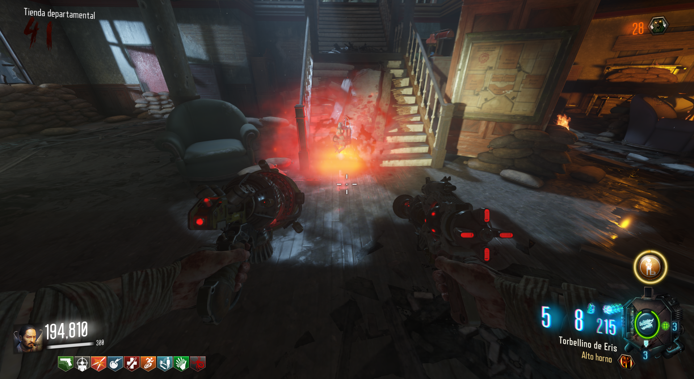
Requisitos: Tener el escudo y también monos.
Florero: Buscaremos un florero en las siguientes ubicaciones.
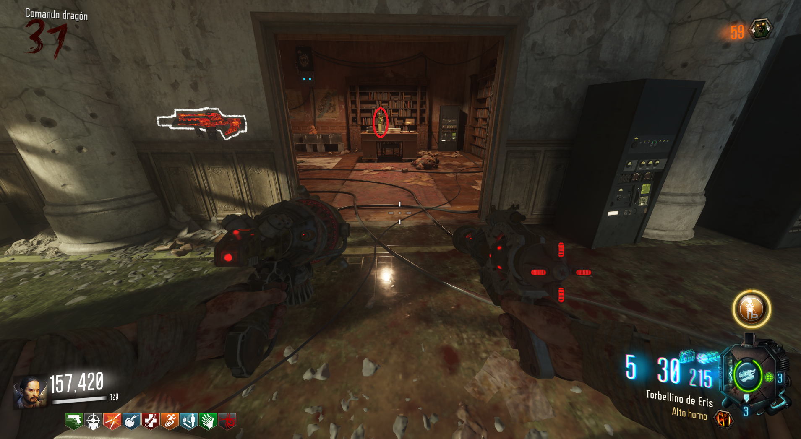
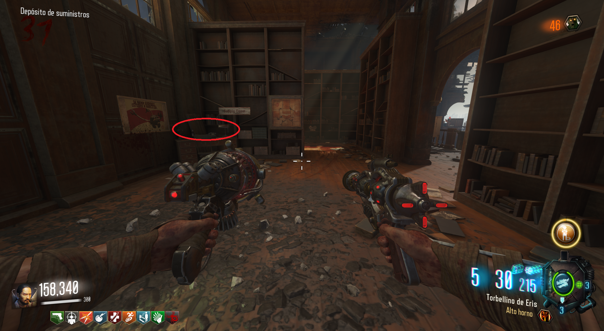
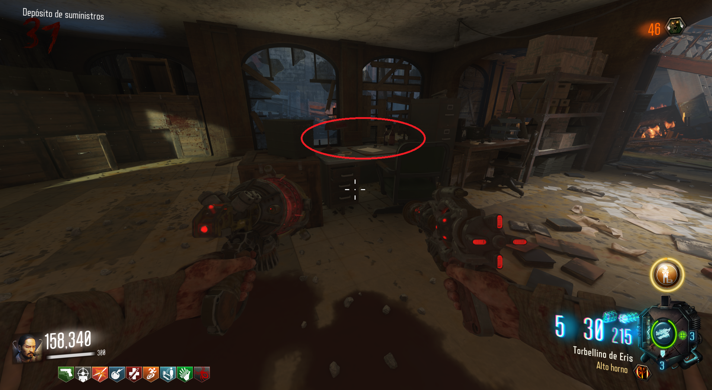
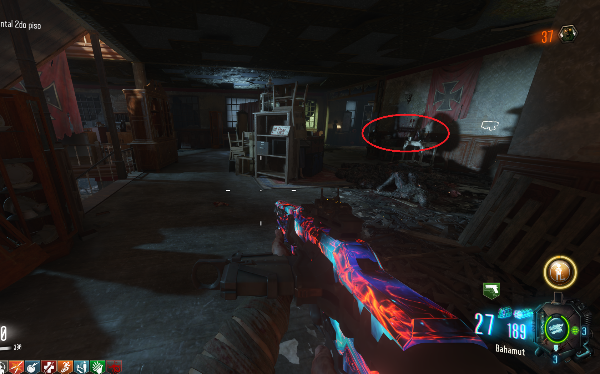
Después buscaremos la vela y al encontrarla, usaremos el fuego del escudo para prenderla y recogerla.
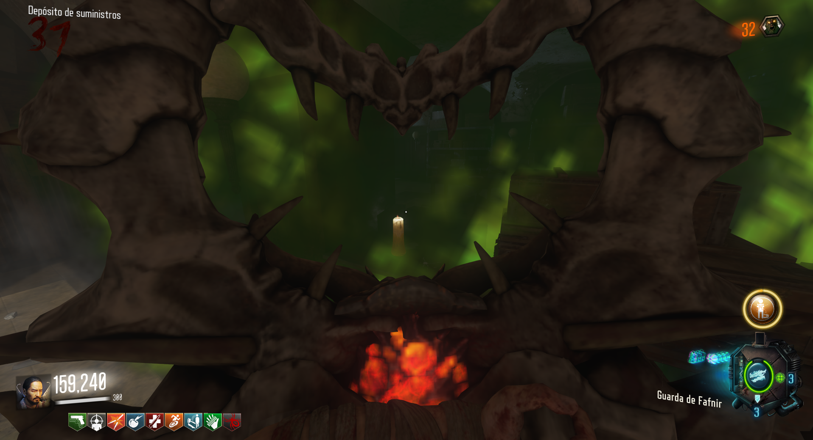
Ubicaciones de las velas:
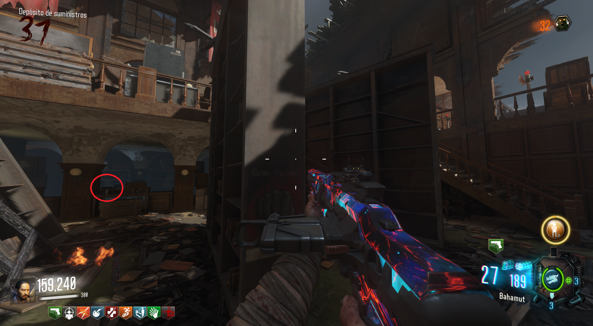
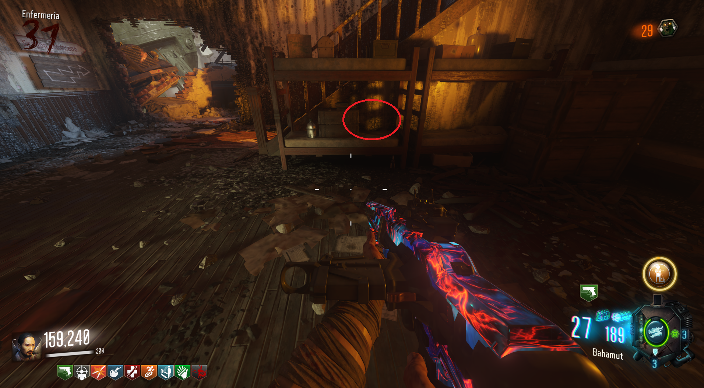
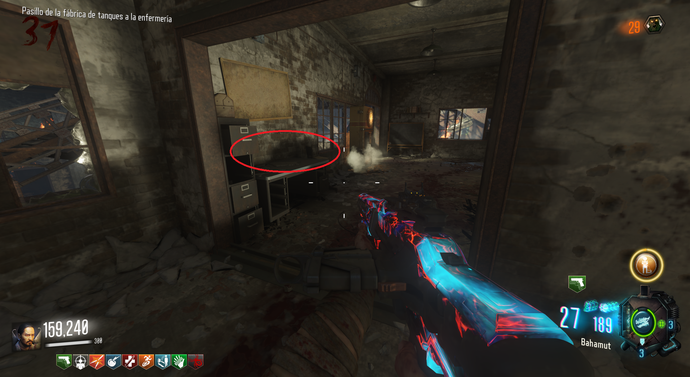
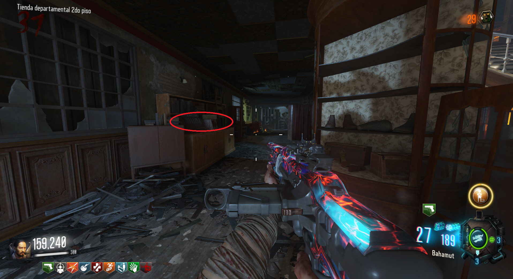
La última pieza la conseguiremos matando 50 zombies con los monos.
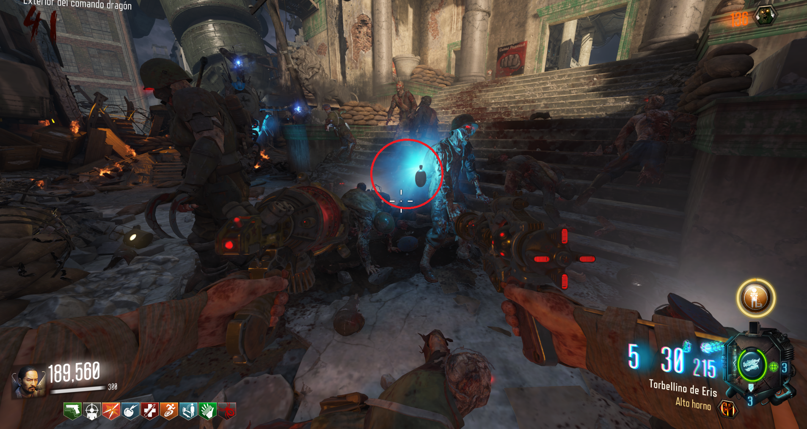
Una vez tengamos las tres piezas, (cada jugador deberá de buscar sus objetos), buscaremos la tumba con la antorcha verde y tiraremos un mono pegado a esta.
Mirando la antorcha podremos reclamar los monos.
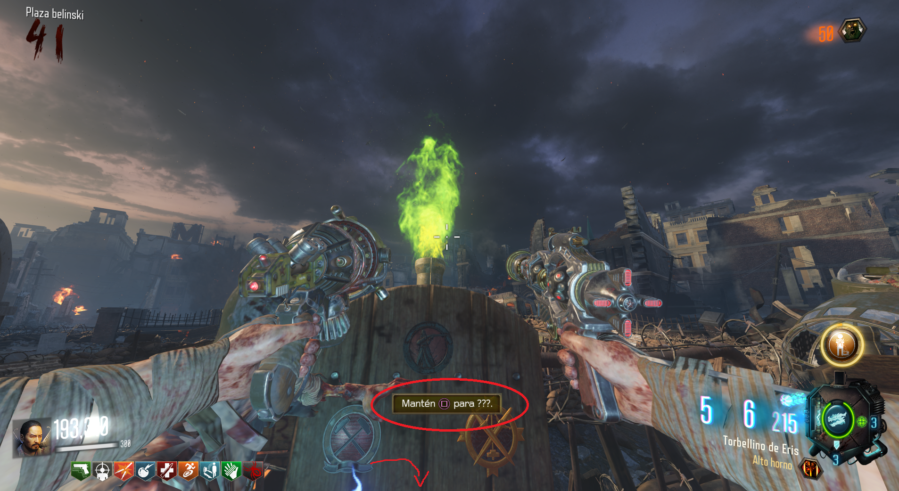